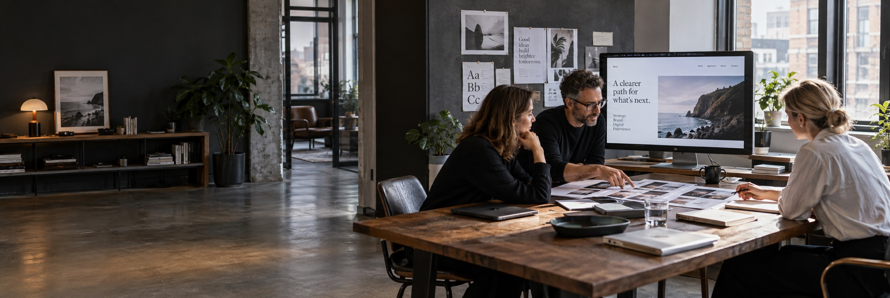

01 / Create
Make it unmistakable.
Build a brand and digital experience people understand, remember, and choose.

VNW Media / Services
Brand, websites, and digital marketing designed to move your business forward together.
Find your serviceOne connected approach
01 / Create
Build a brand and digital experience people understand, remember, and choose.
02 / Connect
Show up in the right places and make a lasting connection with your audience.
03 / Convert
Turn attention into inquiries, then support the conversations that follow.
The complete service collection
Explore every service, or talk with us about where to begin.
Build a brand and digital experience people understand, remember, and choose.
Show up in the right places and make a lasting connection with your audience.
Turn attention into inquiries, then support the conversations that follow.
Services FAQ
Answers to help you plan your website, visibility, campaigns, and customer follow-up.
Ask about your projectOur services span three areas: Create, Connect, and Convert. We help with brand strategy, graphic design, websites, eCommerce, apps, landing pages, and website maintenance; social media, SEO, local visibility, and reputation management; and lead generation, paid advertising, email, SMS, and CRM automation. Explore the service directory above for the full list.
Start with your business goals and the point where customers are getting stuck. That might be finding you, understanding your offer, making an inquiry, or receiving a timely response. We can review your current website and marketing with you to identify priorities and discuss an appropriate scope.
You can discuss a focused project or a combination of services. A website redesign, for example, can connect with SEO and landing pages, while advertising can connect with lead generation and CRM follow-up. The right combination depends on your goals, budget, and existing setup.
We can review what you already have and discuss whether to improve it, build on it, or replace specific parts. The available approach depends on your platform, access, integrations, and the condition of the existing site and campaigns. A full rebuild is not assumed.
Timing and cost depend on the services selected, project complexity, content and asset needs, integrations, and the review process. We discuss scope, deliverables, responsibilities, and timing before work begins. Ongoing marketing also needs time for setup, measurement, and refinement.
We agree on measures that relate to the work and your business goals. These may include qualified inquiries, form submissions, calls, website engagement, search visibility, or campaign conversions. Tracking depends on the platforms and access available; results vary, and no specific ranking or lead volume is guaranteed.
Bring your website address, a short description of your business and audience, your main goals, and any timing or budget considerations. It also helps to know which marketing channels you currently use and what is or is not working. You do not need to have a complete plan before contacting us.
Client Feedback
4.9 on Google